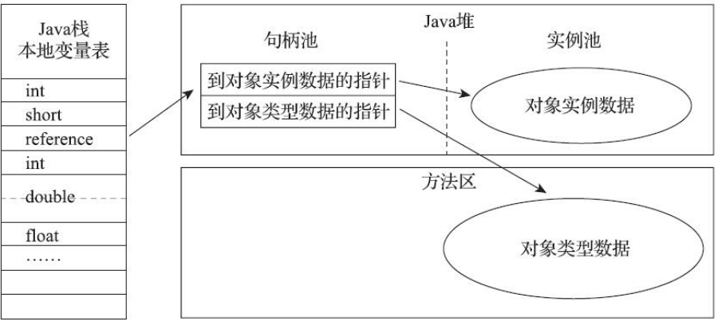
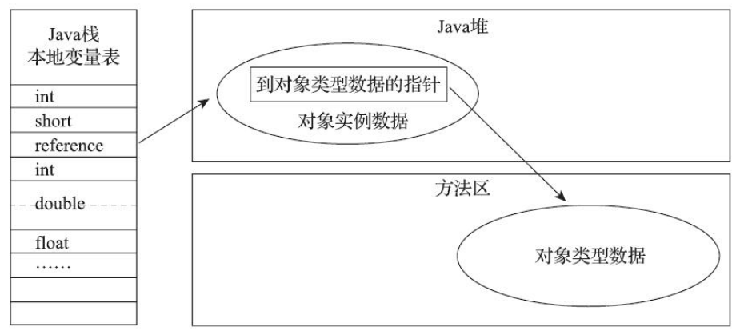

深入理解Java虚拟机（第三版）
书籍实录
第一章：走进JAVA
Java发展史
宏观上了解Java整个发展体系：
- 1995年5月23日，Oak语言改名为Java，并且在SunWorld大会上正式发布Java1.0版本，并且提出“Write Once, Run Anyware”的口号。
- 1996年1月23日，JDK1.0发布，代表技术包括：Java虚拟机、Applet、AWT等。
- 1997年2月19日，Sun公司发布JDK1.1，技术代表有：JAR文件格式、JDBC、JavaBeans、RMI等。语法特性有一定增强：如内部类（Inner Class）和反射（Reflaction）
- 1998年12月4日，JDK1.2发布（工程代号：Playground），Sun拆分Java技术体系为三个方向：分片是面向桌面应用开发的J2SE、面向企业开发的J2EE、面向手机等移动终端开发的J2ME。技术代表如：EJB、Java Plug-in、Java IDL、Swing等，并且在这个版本中Java虚拟机第一次内置了JIT（Just In Time）及时编译器。
- 2000年5月8日，JDK1.3发布（工程代号：Kestrel【美洲红隼】），代表技术：Java类库，使用CORBAIIOP来实现RMI的通信协议。
- 2002年2月13日，JDK1.4发布（工程代号：Merlin【灰背隼】）技术特性例如：正则表达式、异常链、NIO、日志类、XML解析器和XSLT转换器等等。
- 2004年9月30日，JDK5发布（工程代号：Tiger【老虎】）语法特性加强：自动装箱、泛型、动态注解、枚举、可变长参数、循环遍历（foreach循环）等等。虚拟机上，改进了Java内存模型（Java Memory Model，JMM）、提供了java.util.concurrent并发包等。
- 2006年12月11日，JDK6发布（工程代号：Mustang【野马】）改进的包括：提供初步的动态语言支持（通过内置的Mozilla JavaScript Rhino引擎实现）、提供编译期注解处理器和微型HTTP服务器API，等等。Java虚拟机内部做了大量改进，包括锁与同步、垃圾收集、类加载等方面。
- 2011年7月28日，JDK7正式版发布（工程代号Dopphin【海豚】）改进的包括：提供新的G1收集器、加强对非Java语言的调用支持、可并行的类加载架构等。
- 2014年3月18日，JDK8发布，主要功能特性包括：
- JEP 126: 对Lambda表达式的支持，这让Java语言拥有了流畅的函数式表达能力
- JEP 104: 内置Nashorn JavaScript引擎的支持
- JEP 150: 新的时间、日期API
- JEP 122: 彻底移除HotSpot的永久代
- …..
- 2017年9月21日，JDK9艰难面世：Jigsaw模块化功能、增强若干工具（JS Shell、JLink、JHSDB等），整顿了HotSpot各个模块各自为战的日志系统，支持HTTP2客户端API等91个JEP
- 2018年3月20日，JDK10发布：主要目标，内部重构：统一源仓库、统一垃圾收集器接口、统一即时编译器接口（JVMCI在JDK9已经有了，这里引入新的Graal即时编译器）
- 2018年9月25日，JDK11发布：包含17个JEP，其中有ZGC这样的革命性垃圾收集器出现，也有把JDK10中的类型推断加入Lambda语法这种可见性的改善
- 2019年3月20日，JDK12发布：包含9个JEP：Switch表达式、Java微测试套件（JMH）等新功能，最引人注目的特性无疑是加入了由ReaHat
- 领导开发的Shenadnoah垃圾收集器。
Java虚拟机家族
- 虚拟机始祖：Sun Classiz/Exact VM
- 武林盟主：HotSpot VM
HotSpot虚拟机的热点代码探测能力可以通过执行计数器找出最具有编译价值的代码，然后通知及时编译器以方法为单位进行编译。 - 小家碧玉：Mobile/Embedded VM
- 天下第二：BEA JRockit/IBM J9 VM
- 软硬合璧：BEA Liquid VM/Azul VM
Azul VM实例都可以管理至少数十个CPU和数百GB的内存的硬件资源，并提供巨大内存范围内停顿时间可控的垃圾收集器（即业内赫赫有名的PGC和C4收集器）
Zing虚拟机是一个从HotSpot某个旧版代码分支基础上独立出来重新开发的高性能Java虚拟机。要求低延迟、快速预热等场景中，Zing VM都要比HotSpot表现的更好。Zing的PGC、C4收集器可以轻易支持TB级别的Java堆内存，而且保证暂停时间仍然可以维持在不超过10毫秒的范围内，HotSpot要等到JDK11和JDK12的ZGC及Shenandoah收集器才达到了相同的目标，而且目前的效果仍然远不如C4。 - 挑战者：Apache Harmony/Google Android Dalvik VM
- 没有成功，但并非失败：Microsoft JVM及其它
第二章 Java内存区域与内存溢出异常
运行时数据区域
Java虚拟机在执行Java程序的过程中会把它所管理的内存划分为若干个不同的数据区域。这些区域有各自的用途，以及创建和销毁的时间，有的区域随着需积极进程的启动而一直存在，有些区域则是以来用户线程的启用和结束而建立和销毁。分为：方法区（Method Area），虚拟机栈（VM Stack），本地方法栈（Native Method Stack），堆（Heap），程序计数器（Program Counter Register）
程序计数器
一块较小的内存空间，它可以看做是当前线程所执行的字节码的行号指示器。
Java虚拟机栈
线程私有，生命周期与线程相同。
虚拟机栈描述的是Java 方法执行的线程内存模型：每个方法被执行的时候，Java虚拟机都会同步创建一个栈帧（Stack Frame）用于存储局部变量表、操作数栈、动态连接、方法出口等等。
每一个方法调用直至执行完毕的过程，就对应着一个栈帧在虚拟机占中从入栈到出站的过程。
“栈”通常就是指这里讲的虚拟机栈，或者更多情况下只是指虚拟机栈中的局部变量表部分。
局部变量表存放了编译期可知的各种Java虚拟机基本数据类型（boolean、byte、char、short、int、float、long、double）、对象引用（reference类型，它并不等同于对象本身，可能是一个指向对象起始地址的引用指针，也可能是指向一个代表对象的句柄或者其他与此对象相关的位置）和returnAddress类型（指向了一条字节码指令的地址）。
这些数据类型在局部变量表中的存储空间以 局部变量槽（slot）来表示，其中64位长度的long和double类型的数据会占用两个变量槽，其余的数据类型只占用一个。
在《Java虚拟机规范》中，对栈区域规定了两类异常情况：
- 如果线程请求的栈深度大雨虚拟机所允许的深度，将抛出 StackOverflowError异常
- 如果Java虚拟机栈容量可以动态扩展（注：HotSpot虚拟机是不可以动态扩展的，只要线程申请成功了就不会有OOM，但是如果申请时就失败，仍然会出现OOM异常），当栈扩展时无法申请到足够的内存会抛出 OutOfMemoryError异常。
本地方法栈
Native Method Stack与虚拟机栈类似，一个是位虚拟机执行Java方法（字节码）服务；一个是为虚拟机用到的本地（native）方法服务。
Java堆
Java堆是被所有线程共享的一块内存区域，在虚拟机启动时创建。此内存区域唯一的目的就是存放对象实例，Java世界里“几乎”所有对象实例都在这里分配内存。
Java堆是垃圾收集器管理的内存区域。从回收内存角度看，由于现代垃圾收集器大部分都是基于分代收集理论设计的，所以Java堆中经常会出现“新生代”，“老年代”，“永久代”，“Eden空间”，“From Survivor空间”，“To Survivor空间”等名词。
无论从什么角度，无论如何划分，都不会改变Java堆中存储内容堆共性，无论是哪个区域，存储的都只能是对象的实例，将Java堆细分的目的 只是为了更好地回收内存，或者更快地分配内存。
Java堆即可以被实现成固定大小，也可以是扩展的，不过当前主流的Java虚拟机都是按照可扩展来实现的（通过参数-Xmx和-Xms设定）。
如果在Java堆中没有内存完成实例分配，并且堆也无法再扩展时，Java虚拟机将会抛出OutOfMemoryError异常
方法区
与Java堆一样，是各个线程共享的内存区域，它用于存储已被虚拟机加载的 类型信息、常量、静态变量、即时编译器编译后的代码缓存数据等。
方法区与“永久代”本来是两个概念，仅仅因为当时的HotSpot虚拟机设计团队选择把收集器的分代设计扩展至方法区，或者说使用“永久代”实现方法区而已，这样使得HotSpot的垃圾收集器能像管理Java堆一样管理这部分内存，省区专门为方法区编写内存管理代码的工作。
- JDK6时HotSpot开发团队就有放弃永久代，逐步改为采用本地内存（Native Memory）来实现方法区的计划里
- JDK7时，已经把原本放在永久代的字符串常量池、静态变量移出
- JDK8时，完全放弃永久代概念，该用与JRockit、J9一样在本地内存中实现的元空间（Metaspace）来代替，把JDK7中剩余的主要是类型信息，全部移动到元空间中。
如果方法区无法满足新的内存分配需求时，将抛出OutOfMemoryError异常
运行常量池
Runtime Constant Pool是方法区的一部分。Class文件中除了有类的版本、字段、方法、接口等描述信息外，还有一项信息是常量池表。主要用于：存放编译期生成的各种字面量与符号引用，这部分内容将在类加载后存放到方法区的运行时常量池中。
Java语言并不要求常量一定只有编译期才能产生，也就是说，并非预置入Class文件中常量池的内容才能进入方法区运行时常量池，运行期间也可以将新的常量放入池中，这种特性被开发人员利用的较多的是String类的 **intern()**方法。
当常量池无法再申请到内存时会抛出OutOfMemoryError（本来就是方法区一部分，自然收到方法区内存限制）
直接内存
Direct Memory并不是虚拟机运行时数据区的一部分，也不是《Java虚拟机》中定义的内存区域。这部分内存也被频繁地使用，而且也可能导致OutOfMemoryError异常出现
背景
在JDK1.4中新加入了NIO（New Input/Output）类。引入了一种基于通道（Channel）与缓冲区（Buffer）的I/O方式，它可以使用Native函数库直接分配堆外内存，然后通过一个存储在Java堆里面的DirectByteBuffer对象作为这块内存的引用进行操作。这样就能在一些场景中显著提高性能，因为避免了在Java堆和Native堆中来回复制数据。
问题
本机直接内存分配不受到Java堆大小限制，但是，既然时内存，肯定还是会受到本机总内存（包括物理内存、SWAP分区或者分页文件）大小以及处理器寻址空间的限制。
一般服务器管理员配置虚拟机参数时，会根据实际内存去设置-Xmx等参数信息，但是会常常忽略直接内存，使得各个内存区域总和大于物理内存限制，从而导致动态扩展时出现OutOfMemoryError异常
HotSpot虚拟机对象探秘
注：书中探讨的是常用的HotSpot虚拟机的Java堆中的 对象分配、布局和访问的全过程。
对象的创建（过程）
- 检查过程
当Java虚拟机遇到一条字节码new指令时，首先将去检查这个指令的参数是否能在常量池中定位到另一个类的符号引用，并且检查这个符号引用代表的类是否加载、解析和初始化过。如果没有，那么必须先执行相应的类加载过程。 - 分配过程
类加载检查通过之后，接下来虚拟机将为新生对象分配内存。对象所需内存的大小在类加载完成之后便可完全确定，对象分配空间的任务实际上便等同于吧一块确定大小的内存块从Java堆中划分出来。
当使用Serial、ParNew等带压缩整理过程的收集器时，系统采用的分配算法是指针碰撞，既简单又高效。而当使用CMS这种基于清除（Sweep）算法的收集器时，理论上就只能采用较为复杂的空闲列表来分配内存。
分配过程中的操作原子性
- 采用CAS配上失败重试的机制
- 把内存分配的动作按照线程划分在不同的空间之中进行，即每个线程在java堆中预先分配一小块内存，成为本地线程分配缓冲（Thread Local Allocation Buffer, TLAB），哪个线程要分配内存，就在哪个线程的本地缓冲区中分配，只有本地缓冲区用完了，分配新的缓冲区时才需要同步锁定。虚拟机是否需要使用TLAB，可以通过-XX：+/-UseTLAB参数来设定
- 初始化过程
内存分配完成之hi，虚拟机必须将分配到内存空间（但不包括对象头）都初始化成零值。- 对象设置
对象是哪个类的实例、如何才能找到类的元数据信息、对象的哈希码、对象的GC分代年龄等信息。 - 构造函数初始化
new指令之后会接着执行()方法，按照程序员的意愿对对象进行初始化。
- 对象设置
对象的内存布局
在HotSpot虚拟机中，对象在堆内存中的存储布局可以划分为三个部分：对象头（Header）、实例数据（Instance Data）和对齐填充（Padding）。
对象头信息
- 一类：用于存储对象自身运行时数据，如：哈希码（HashCode）、GC分代年龄、锁状态标志、线程持有的锁、偏向线程ID、偏向时间戳等
- 另一类：类型指针，即对象指向它的类型元数据的指针，Java虚拟机通过这个指针来确定该对象时哪个类型的实例。
实例数据信息
程序代码中定义的各种类型字段内容，无论是从父类继承下来的，还是在子类中定义的字段都必须记录起来。这部分的存储顺序会收到虚拟机分配策略参数（-XX:FieldsAllocationStyle参数）和字段在Java源码中的定义顺序的影响
对齐填充
不是必然存在，也没有特别的含义，仅仅起着占位符的作用。任何对象大小都必须是8字节的整数倍。如果对象实例数据部分没有对齐的话，就需要通过对齐填充来补全。
对象的访问定位
Java程序会通过栈上的reference数据来操作对上的具体对象，但由于reference类型在《Java虚拟机规范》里面只规定了 它是一个指向对象的引用，并没有定义这个引用应该通过什么方式去定位、访问到堆中对象的具体位置。主流的访问方式有：句柄 和 直接指针。
- 句柄访问：Java堆中可能会划分出一块内存来作为 句柄池，reference中存储的就是对象的句柄地址，而句柄中包含了对象实例数据与类型数据各自具体的地址信息
- 直接指针访问：reference中存储的直接就是对象的地址


实战：OutOfMemoryError异常
注： 书中介绍了很多实战经验，这里仅记录一些经验相关事项，具体实例代码参考书中详细说明
本节实战的主要目的有两个：
- 通过代码验证《Java虚拟机规范》中描述的各个运行时区域存储的内容
- 遇到实际的内存溢出异常时，能够根据异常的提示信息迅速得知时哪个区域的内存溢出，知道怎样的代码可能会导致这些区域内存溢出，以及出现这些异常后该如何处理。
Java堆溢出
根本原因： Java堆用于存储对象实例，只要不断创建对象，并且保证GC Roots到对象之间有可达路径来避免垃圾回收机制清除这些对象，那么随着对象数量增加，总容量触及最大堆的容量限制后就会产生内存溢出异常。
常规处理方法：
- 先通过内存映像分析工具（如Eclipse Memory Analyzer）对Dump出来的堆转存储快照进行分析，首先确认内存中导致的OOM的对象是否时必要的，也就是到底时出现了 内存泄露（Memory Leak） 还是 内存溢出（Memory Overflow）
- 如果是内存泄漏，可以通过工具查看泄漏对象到GC Roots的引用链，找到泄漏对象是通过怎样的引用路径、与哪些GC Roots相关联，才导致垃圾收集器无法回收，根据泄漏对象的类型信息以及它到GC Roots引用链的信息，一般可以比较准确的定位到这些对象的创建位置，进而找出产生内存泄漏的代码的具体位置。
- 如果不是内存泄漏，就是对象必须要存活的话，就要分析Java虚拟机堆参数（-Xmx与-Xms）设置，与机器内存相比，是否还是有上调的空间。再从代码上检查是否存在某些对象生命周期过长、持有状态时间过长、存储结构设计不合理等等，尽量减少程序运行期间的内存消耗。
虚拟机和本地方法栈溢出
《Java虚拟机规范》中描述了两种情况:
- 如果线程请求的栈深度大于虚拟机所允许的最大深度，将抛出StackOverflowError异常
- 如果虚拟机的栈内存允许动态扩展，当扩展栈容量无法申请到足够的内存时，将抛出OutOfMemoryError异常
通常默认参数，对于正常的调用（包括不能做尾递归优化的递归调用），默认深度（1000~2000）完全够用。如果建立过多线程导致的内存溢出，在不能减少线程数量或者更换64位虚拟机的情况下，就只能通过减少最大堆和减少栈容量 来换取更多的线程
方法区和运行时常量池溢出
方法区溢出也是一种常见的内存溢出异常，一个类如果要被垃圾收集器回收，要达成的条件比较苛刻。
在JDK8以后，永久代便完全退出了历史舞台，元空间作为其替代者登场，HotSpot提供了一些参数作为原空间的防御措施，主要包括：
- -XX: MaxMetaspaceSize: 设置元空间最大值，默认是-1，即不限制，或者说只受限于本地内存大小
- -XX: MetaspaceSize：指定元空间初始空间大小，以字节为单位，达到该值就会触发垃圾收集器进行类型卸载，同时收集器会对该值进行调整：如果释放了大量的空间，就适当降低该值；如果释放了很少的空间，那么在不超过XX: MaxMetaspaceSize（如果设置了的话）情况下，适当提高该值
- -XX: MinMetaspaceFreeRatio：作用是在垃圾收集器之后控制最小的元空间剩余容量的百分比，可减少因为元空间不足导致的垃圾收集的频率。类似的还有
-XX: MinMetaspaceFreeRatio控制最大的元空间剩余容量的百分比。